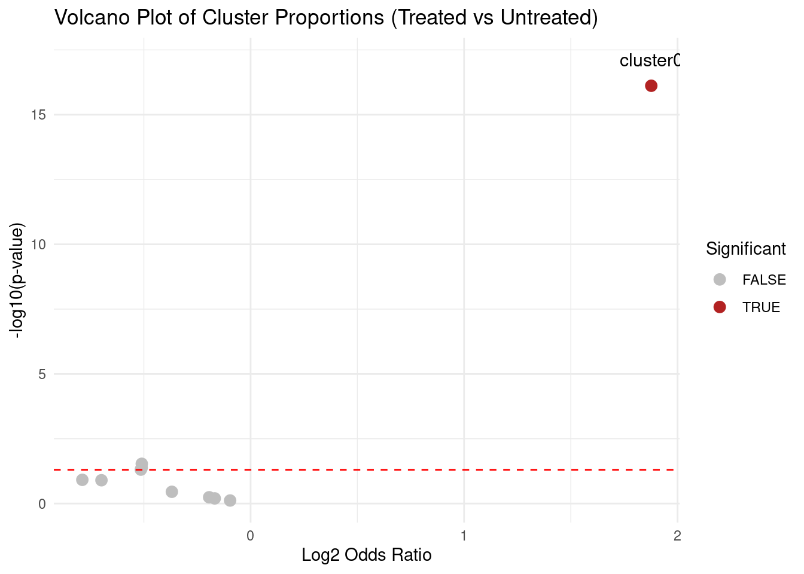

Last updated: 2025-12-03
Checks: 7 0
Knit directory: muse/
This reproducible R Markdown analysis was created with workflowr (version 1.7.1). The Checks tab describes the reproducibility checks that were applied when the results were created. The Past versions tab lists the development history.
Great! Since the R Markdown file has been committed to the Git repository, you know the exact version of the code that produced these results.
Great job! The global environment was empty. Objects defined in the global environment can affect the analysis in your R Markdown file in unknown ways. For reproduciblity it’s best to always run the code in an empty environment.
The command set.seed(20200712) was run prior to running
the code in the R Markdown file. Setting a seed ensures that any results
that rely on randomness, e.g. subsampling or permutations, are
reproducible.
Great job! Recording the operating system, R version, and package versions is critical for reproducibility.
Nice! There were no cached chunks for this analysis, so you can be confident that you successfully produced the results during this run.
Great job! Using relative paths to the files within your workflowr project makes it easier to run your code on other machines.
Great! You are using Git for version control. Tracking code development and connecting the code version to the results is critical for reproducibility.
The results in this page were generated with repository version b52ca96. See the Past versions tab to see a history of the changes made to the R Markdown and HTML files.
Note that you need to be careful to ensure that all relevant files for
the analysis have been committed to Git prior to generating the results
(you can use wflow_publish or
wflow_git_commit). workflowr only checks the R Markdown
file, but you know if there are other scripts or data files that it
depends on. Below is the status of the Git repository when the results
were generated:
Ignored files:
Ignored: .Rproj.user/
Ignored: data/1M_neurons_filtered_gene_bc_matrices_h5.h5
Ignored: data/293t/
Ignored: data/293t_3t3_filtered_gene_bc_matrices.tar.gz
Ignored: data/293t_filtered_gene_bc_matrices.tar.gz
Ignored: data/5k_Human_Donor1_PBMC_3p_gem-x_5k_Human_Donor1_PBMC_3p_gem-x_count_sample_filtered_feature_bc_matrix.h5
Ignored: data/5k_Human_Donor2_PBMC_3p_gem-x_5k_Human_Donor2_PBMC_3p_gem-x_count_sample_filtered_feature_bc_matrix.h5
Ignored: data/5k_Human_Donor3_PBMC_3p_gem-x_5k_Human_Donor3_PBMC_3p_gem-x_count_sample_filtered_feature_bc_matrix.h5
Ignored: data/5k_Human_Donor4_PBMC_3p_gem-x_5k_Human_Donor4_PBMC_3p_gem-x_count_sample_filtered_feature_bc_matrix.h5
Ignored: data/97516b79-8d08-46a6-b329-5d0a25b0be98.h5ad
Ignored: data/Parent_SC3v3_Human_Glioblastoma_filtered_feature_bc_matrix.tar.gz
Ignored: data/brain_counts/
Ignored: data/cl.obo
Ignored: data/cl.owl
Ignored: data/jurkat/
Ignored: data/jurkat:293t_50:50_filtered_gene_bc_matrices.tar.gz
Ignored: data/jurkat_293t/
Ignored: data/jurkat_filtered_gene_bc_matrices.tar.gz
Ignored: data/pbmc20k/
Ignored: data/pbmc20k_seurat/
Ignored: data/pbmc3k.h5ad
Ignored: data/pbmc3k/
Ignored: data/pbmc3k_bpcells_mat/
Ignored: data/pbmc3k_export.mtx
Ignored: data/pbmc3k_matrix.mtx
Ignored: data/pbmc3k_seurat.rds
Ignored: data/pbmc4k_filtered_gene_bc_matrices.tar.gz
Ignored: data/pbmc_1k_v3_filtered_feature_bc_matrix.h5
Ignored: data/pbmc_1k_v3_raw_feature_bc_matrix.h5
Ignored: data/refdata-gex-GRCh38-2020-A.tar.gz
Ignored: data/seurat_1m_neuron.rds
Ignored: data/t_3k_filtered_gene_bc_matrices.tar.gz
Ignored: r_packages_4.4.1/
Ignored: r_packages_4.5.0/
Untracked files:
Untracked: analysis/bioc.Rmd
Untracked: analysis/bioc_scrnaseq.Rmd
Untracked: bpcells_matrix/
Untracked: data/Caenorhabditis_elegans.WBcel235.113.gtf.gz
Untracked: data/GCF_043380555.1-RS_2024_12_gene_ontology.gaf.gz
Untracked: data/arab.rds
Untracked: data/astronomicalunit.csv
Untracked: data/femaleMiceWeights.csv
Untracked: data/lung_bcell.rds
Untracked: m3/
Untracked: women.json
Unstaged changes:
Modified: analysis/isoform_switch_analyzer.Rmd
Note that any generated files, e.g. HTML, png, CSS, etc., are not included in this status report because it is ok for generated content to have uncommitted changes.
These are the previous versions of the repository in which changes were
made to the R Markdown (analysis/fisher.Rmd) and HTML
(docs/fisher.html) files. If you’ve configured a remote Git
repository (see ?wflow_git_remote), click on the hyperlinks
in the table below to view the files as they were in that past version.
| File | Version | Author | Date | Message |
|---|---|---|---|---|
| Rmd | b52ca96 | Dave Tang | 2025-12-03 | Provide some background information |
| html | 2f260a0 | Dave Tang | 2025-03-29 | Build site. |
| Rmd | a1be60c | Dave Tang | 2025-03-29 | Left justify by adding colon |
| html | 6b4d189 | Dave Tang | 2025-03-29 | Build site. |
| Rmd | 1661426 | Dave Tang | 2025-03-29 | Left justify |
| html | 3a24351 | Dave Tang | 2025-03-29 | Build site. |
| Rmd | cd487f9 | Dave Tang | 2025-03-29 | Label significant cluster in volcano plot |
| html | c33357f | Dave Tang | 2025-03-29 | Build site. |
| Rmd | e9e40c4 | Dave Tang | 2025-03-29 | Add some notes |
| html | 4bccd40 | Dave Tang | 2025-03-29 | Build site. |
| Rmd | 77bdfb3 | Dave Tang | 2025-03-29 | Volcano plot and cluster proportions |
| html | 1b5016d | Dave Tang | 2025-03-29 | Build site. |
| Rmd | a86eba5 | Dave Tang | 2025-03-29 | Per-cluster Fisher’s Exact Test |
| html | 5477eb3 | Dave Tang | 2025-03-29 | Build site. |
| Rmd | aa71d48 | Dave Tang | 2025-03-29 | Fisher’s Exact Test |
Fisher’s Exact Test is a statistical method for determining whether there is a significant association between two categorical variables. It is particularly useful when:
The test examines whether the observed pattern in your data could reasonably occur by chance alone, or whether it suggests a genuine relationship between the variables. It works with data organised in contingency tables (most commonly 2×2, but applicable to larger tables as well).
Some guidelines for when to use Fisher’s Exact Test:
Regarding expected counts, this is not the same as observed values in the data.
eg1 <- matrix(
c(8, 3, 2, 7),
nrow = 2,
dimnames = list(
c("A", "B"),
c("Success", "Failure")
)
)
eg1 Success Failure
A 8 2
B 3 7The observed counts are 8, 3, 2, 7 and the expected counts are what you would expect if there were no association between the groups and outcomes.
Expected Count = (Row Total * Column Total) / Grand Total.
row_totals <- rowSums(eg1)
col_totals <- colSums(eg1)
grand_total <- sum(eg1)
expected_counts <- matrix(0, nrow = 2, ncol = 2, dimnames = dimnames(eg1))
for(i in 1:2) {
for(j in 1:2) {
expected_counts[i,j] <- row_totals[i] * col_totals[j] / grand_total
}
}
expected_counts Success Failure
A 5.5 4.5
B 5.5 4.5Since two cells have expected counts < 5, Fisher’s Exact Test is appropriate for this data. The chi-square test approximation relies on expected frequencies being large enough (>= 5). When expected counts are small, the chi-square approximation becomes unreliable, and Fisher’s Exact Test should be used instead.
Calculate expected counts with a Chi-square test.
chisq_test <- chisq.test(eg1)Warning in chisq.test(eg1): Chi-squared approximation may be incorrectchisq_test$expected Success Failure
A 5.5 4.5
B 5.5 4.5Imagine a small clinical trial to test a new drug for migraines. 20 patients are recruited and randomly assigned to whether they will receive the new drug or a placebo. After the treatment, whether patient experienced relief from their migraine was recorded.
clinical_data <- matrix(
c(8, 3, 2, 7),
nrow = 2,
dimnames = list(
c("New Drug", "Placebo"),
c("Relief", "No Relief")
)
)
clinical_data Relief No Relief
New Drug 8 2
Placebo 3 7We can use Fisher’s Exact Test to test “What is the probability of seeing a pattern this strong (or stronger) if the drug had no effect?”
Imagine there are 11 “Relief” cards and 9 “No Relief” cards and you randomly deal 10 cards to “New Drug” group and 10 to “Placebo” group. Fisher’s test asks: “If I shuffled these cards randomly many times, how often would I see a split as extreme as 8-2 vs 3-7?”
res <- fisher.test(clinical_data)
res
Fisher's Exact Test for Count Data
data: clinical_data
p-value = 0.06978
alternative hypothesis: true odds ratio is not equal to 1
95 percent confidence interval:
0.8821175 127.0558418
sample estimates:
odds ratio
8.153063 If the drug had no effect, there’s only about a 0.06978% chance you’d see a pattern this extreme or more extreme by random chance.
Unlike other statistical tests that use approximations, Fisher’s Exact test:
Let’s see what happens if we use chi-square test (an approximation) on our small dataset:
chisq_result <- chisq.test(clinical_data)Warning in chisq.test(clinical_data): Chi-squared approximation may be
incorrectchisq_result
Pearson's Chi-squared test with Yates' continuity correction
data: clinical_data
X-squared = 3.2323, df = 1, p-value = 0.0722If you have more than two categories, Fisher’s Exact Test becomes a generalised Fisher’s Exact Test (also known as Fisher-Freeman-Halton test), because the regular Fisher’s test is for 2x2 tables.
As noted above, for larger tables people often use:
Create cell cluster table.
treated <- c(50, 60, 40, 30, 80, 90, 20, 15, 70, 45)
untreated <- c(55, 50, 35, 25, 85, 95, 25, 20, 65, 40)
cluster_table <- rbind(treated, untreated)
colnames(cluster_table) <- paste0("cluster", 0:9)
rownames(cluster_table) <- c("Treated", "Untreated")
cluster_table cluster0 cluster1 cluster2 cluster3 cluster4 cluster5 cluster6
Treated 50 60 40 30 80 90 20
Untreated 55 50 35 25 85 95 25
cluster7 cluster8 cluster9
Treated 15 70 45
Untreated 20 65 40Chi-squared Test.
chisq_test <- chisq.test(cluster_table)
chisq_test
Pearson's Chi-squared test
data: cluster_table
X-squared = 3.9458, df = 9, p-value = 0.9149Generalised Fisher’s Exact Test.
workspace - an integer specifying the size of the
workspace used in the network algorithm. In units of 4 bytes. Only used
for non-simulated p-values larger than 2×22×2 tables. Since R version
3.5.0, this also increases the internal stack size which allows larger
problems to be solved, however sometimes needing hours. In such cases,
simulate.p.values=TRUE may be more reasonable.fisher_test <- fisher.test(cluster_table, workspace=2e8)
fisher_test
Fisher's Exact Test for Count Data
data: cluster_table
p-value = 0.917
alternative hypothesis: two.sidedAnother cluster table.
treated2 <- c(200, 60, 40, 30, 80, 90, 20, 15, 70, 45)
untreated2 <- c(55, 50, 35, 30, 85, 95, 25, 20, 75, 40)
cluster_table2 <- rbind(treated2, untreated2)
colnames(cluster_table2) <- paste0("cluster", 0:9)
rownames(cluster_table2) <- c("Treated", "Untreated")
cluster_table2 cluster0 cluster1 cluster2 cluster3 cluster4 cluster5 cluster6
Treated 200 60 40 30 80 90 20
Untreated 55 50 35 30 85 95 25
cluster7 cluster8 cluster9
Treated 15 70 45
Untreated 20 75 40Chi-squared Test; Chi-squared is valid when expected counts are reasonably large (> 5 cells per condition per cluster).
chisq_test2 <- chisq.test(cluster_table2)
chisq_test2
Pearson's Chi-squared test
data: cluster_table2
X-squared = 69.837, df = 9, p-value = 1.639e-11Generalised Fisher’s Exact Test.
simulate.p.value - a logical indicating whether to
compute p-values by Monte Carlo simulation, in larger than 2×22×2
tables.fisher_test2 <- fisher.test(cluster_table2, simulate.p.value = TRUE)
fisher_test2
Fisher's Exact Test for Count Data with simulated p-value (based on
2000 replicates)
data: cluster_table2
p-value = 0.0004998
alternative hypothesis: two.sidedNotes:
treated3 <- c(50, 60, 40, 30, 80, 90, 20, 15, 70, 45)
untreated3 <- untreated*3
cluster_table3 <- rbind(treated3, untreated3)
colnames(cluster_table3) <- paste0("cluster", 0:9)
rownames(cluster_table3) <- c("Treated", "Untreated")
chisq.test(cluster_table3)
Pearson's Chi-squared test
data: cluster_table3
X-squared = 5.8925, df = 9, p-value = 0.7506Perform one Fisher’s Exact Test per cluster.
treated <- c(200, 60, 40, 30, 80, 90, 20, 15, 70, 45)
untreated <- c(55, 50, 35, 30, 85, 95, 25, 20, 75, 40)
clusters <- paste0("cluster", 0:9)
total_treated <- sum(treated)
total_untreated <- sum(untreated)
res <- purrr::map(seq_along(clusters), \(i){
contingency_table <- matrix(
c(
treated[i], total_treated - treated[i],
untreated[i], total_untreated - untreated[i]
),
nrow=2,
byrow=TRUE
)
fisher_res <- fisher.test(contingency_table)
list(
table = contingency_table,
stat = fisher_res
)
})
res[[1]]$table
[,1] [,2]
[1,] 200 450
[2,] 55 455
$stat
Fisher's Exact Test for Count Data
data: contingency_table
p-value < 2.2e-16
alternative hypothesis: true odds ratio is not equal to 1
95 percent confidence interval:
2.631973 5.188538
sample estimates:
odds ratio
3.672694 As a table with multiple testing correction.
data.frame(
Cluster = clusters,
Treated = treated,
Untreated = untreated,
pvalue = purrr::map_dbl(res, \(x) x$stat$p.value),
odds_ratio = purrr::map_dbl(res, \(x) x$stat$estimate)
) -> res_df
res_df$padj <- p.adjust(res_df$pvalue, method = "BH")
res_df$log2_odds_ratio <- log2(res_df$odds_ratio)
res_df Cluster Treated Untreated pvalue odds_ratio padj
1 cluster0 200 55 7.654036e-17 3.6726937 7.654036e-16
2 cluster1 60 50 7.625829e-01 0.9356553 7.625829e-01
3 cluster2 40 35 6.324680e-01 0.8900209 7.027423e-01
4 cluster3 30 30 3.519013e-01 0.7743725 5.027161e-01
5 cluster4 80 85 4.189083e-02 0.7019839 1.226881e-01
6 cluster5 90 95 2.924272e-02 0.7022974 1.226881e-01
7 cluster6 20 25 1.259970e-01 0.6161451 2.099949e-01
8 cluster7 15 20 1.215913e-01 0.5790270 2.099949e-01
9 cluster8 70 75 4.907522e-02 0.7002301 1.226881e-01
10 cluster9 45 40 5.716169e-01 0.8740708 7.027423e-01
log2_odds_ratio
1 1.87683857
2 -0.09595098
3 -0.16808884
4 -0.36890045
5 -0.51049016
6 -0.50984593
7 -0.69865806
8 -0.78829757
9 -0.51409895
10 -0.19417790Volcano plot.
library(ggplot2)
alpha <- 0.05
res_df$Significant <- res_df$padj < alpha
ggplot(res_df, aes(x=log2_odds_ratio, y=-log10(pvalue))) +
geom_point(aes(colour=Significant), size=3) +
geom_text(
data=res_df[res_df$Significant,],
aes(label=Cluster),
nudge_y=1,
size=4
) +
geom_hline(yintercept = -log10(0.05), linetype="dashed", colour="red") +
scale_colour_manual(values=c("grey", "firebrick")) +
xlab("Log2 Odds Ratio") +
ylab("-log10(p-value)") +
ggtitle("Volcano Plot of Cluster Proportions (Treated vs Untreated)") +
theme_minimal()
Plot Cluster Proportions.
prop_df <- data.frame(
Cluster = rep(clusters, 2),
Condition = rep(c("Treated", "Untreated"), each=length(clusters)),
Proportion = c(treated / total_treated, untreated / total_untreated)
)
ggplot(prop_df, aes(x=Cluster, y=Proportion, fill=Condition)) +
geom_bar(stat="identity", position="dodge") +
ylab("Proportion of Cells") +
theme_minimal() +
theme(axis.title.x = element_blank())
| Version | Author | Date |
|---|---|---|
| 4bccd40 | Dave Tang | 2025-03-29 |
If using Seurat, just use
table(Idents(seurat_obj), seurat_obj$condition) to create
the contingency table and carry out the steps as per above.
The odds ratio compares the odds of finding a cell in a specific cluster in treated cells versus in untreated cells.
For example:
| Cluster A | Not Cluster A | Total | |
|---|---|---|---|
| Treated | 200 | 450 | 650 |
| Untreated | 55 | 455 | 510 |
The odds of being in Cluster A:
\[ {Odds}_{\text{treated}} = \frac{200}{450} = 0.4444 \]
\[ \text{Odds}_{\text{untreated}} = \frac{55}{455} = 0.1209 \]
So the odds ratio is:
\[ \text{OR} = \frac{0.4444}{0.1209} \approx 3.6758 \]
res_df[1, ] Cluster Treated Untreated pvalue odds_ratio padj
1 cluster0 200 55 7.654036e-17 3.672694 7.654036e-16
log2_odds_ratio Significant
1 1.876839 TRUE| Odds Ratio | Interpretation |
|---|---|
| OR = 1 | No difference between treated and untreated |
| OR > 1 | Treated cells are enriched in this cluster |
| OR < 1 | Treated cells are depleted in this cluster |
In the example above, OR ~ 3.67 means treated cells are ~3.67 times more likely to be in Cluster 0 than untreated cells.
Taking the log2 of the odds ratio is common because:
log2(OR = 2) = 1log2(OR = 0.5) = -1log2(OR) = 1 means cells are 2x more
likely to be in that cluster if treated.log2(OR) = -1 means cells are 2x less
likely (i.e., enriched in untreated).log2(OR) = 0 means no difference between treated and
untreated.
sessionInfo()R version 4.5.0 (2025-04-11)
Platform: x86_64-pc-linux-gnu
Running under: Ubuntu 24.04.3 LTS
Matrix products: default
BLAS: /usr/lib/x86_64-linux-gnu/openblas-pthread/libblas.so.3
LAPACK: /usr/lib/x86_64-linux-gnu/openblas-pthread/libopenblasp-r0.3.26.so; LAPACK version 3.12.0
locale:
[1] LC_CTYPE=en_US.UTF-8 LC_NUMERIC=C
[3] LC_TIME=en_US.UTF-8 LC_COLLATE=en_US.UTF-8
[5] LC_MONETARY=en_US.UTF-8 LC_MESSAGES=en_US.UTF-8
[7] LC_PAPER=en_US.UTF-8 LC_NAME=C
[9] LC_ADDRESS=C LC_TELEPHONE=C
[11] LC_MEASUREMENT=en_US.UTF-8 LC_IDENTIFICATION=C
time zone: Etc/UTC
tzcode source: system (glibc)
attached base packages:
[1] stats graphics grDevices utils datasets methods base
other attached packages:
[1] lubridate_1.9.4 forcats_1.0.0 stringr_1.5.1 dplyr_1.1.4
[5] purrr_1.0.4 readr_2.1.5 tidyr_1.3.1 tibble_3.3.0
[9] ggplot2_3.5.2 tidyverse_2.0.0 workflowr_1.7.1
loaded via a namespace (and not attached):
[1] sass_0.4.10 generics_0.1.4 stringi_1.8.7 hms_1.1.3
[5] digest_0.6.37 magrittr_2.0.3 timechange_0.3.0 evaluate_1.0.3
[9] grid_4.5.0 RColorBrewer_1.1-3 fastmap_1.2.0 rprojroot_2.0.4
[13] jsonlite_2.0.0 processx_3.8.6 whisker_0.4.1 ps_1.9.1
[17] promises_1.3.3 httr_1.4.7 scales_1.4.0 jquerylib_0.1.4
[21] cli_3.6.5 rlang_1.1.6 withr_3.0.2 cachem_1.1.0
[25] yaml_2.3.10 tools_4.5.0 tzdb_0.5.0 httpuv_1.6.16
[29] vctrs_0.6.5 R6_2.6.1 lifecycle_1.0.4 git2r_0.36.2
[33] fs_1.6.6 pkgconfig_2.0.3 callr_3.7.6 pillar_1.10.2
[37] bslib_0.9.0 later_1.4.2 gtable_0.3.6 glue_1.8.0
[41] Rcpp_1.0.14 xfun_0.52 tidyselect_1.2.1 rstudioapi_0.17.1
[45] knitr_1.50 farver_2.1.2 htmltools_0.5.8.1 labeling_0.4.3
[49] rmarkdown_2.29 compiler_4.5.0 getPass_0.2-4